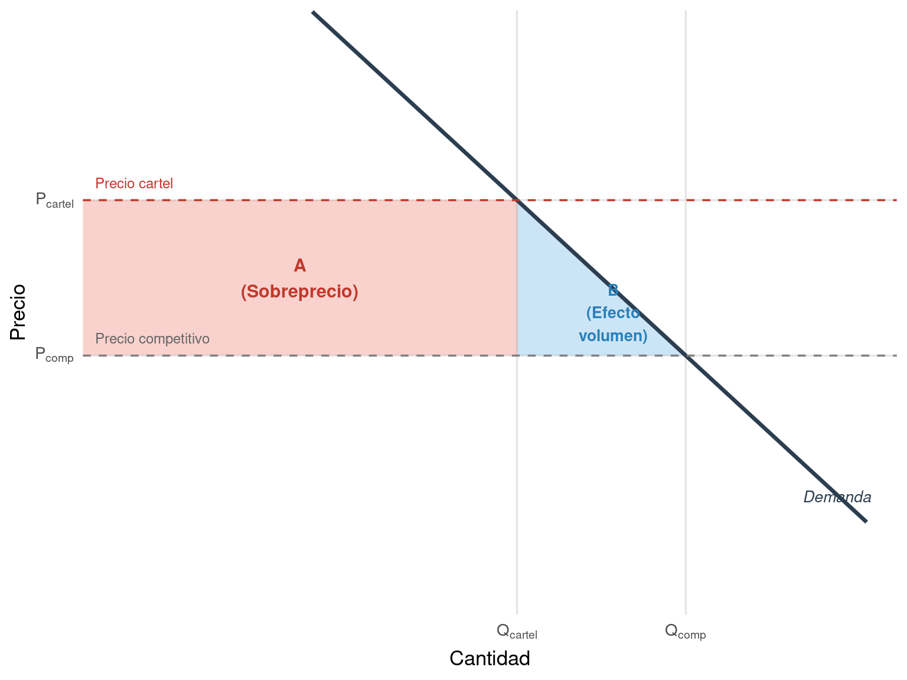
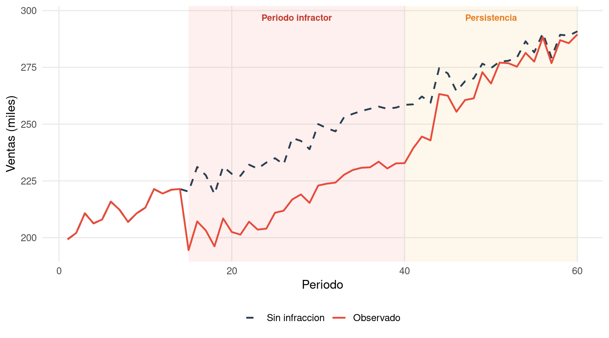

Un error que he observado con frecuencia en informes periciales de daños —tanto propios, en mis primeros años de ejercicio, como ajenos que he debido revisar o rebatir— es la tentación de saltar directamente al modelo econométrico sin haber comprendido cabalmente la conducta ilícita que genera el daño. El perito recibe el encargo, identifica los datos disponibles y aplica el método que le resulta más familiar, sin detenerse a analizar cómo opera el mecanismo de daño en ese caso concreto.
Este proceder es un atajo peligroso. La naturaleza de la conducta determina el tipo de daño que se produce, y el tipo de daño condiciona el método de cuantificación adecuado. No es lo mismo estimar el sobreprecio causado por un cártel de fijación de precios que cuantificar el lucro cesante derivado de una exclusión de mercado por abuso de posición dominante. No es lo mismo valorar el daño por imitación desleal de un producto que el provocado por la violación de secretos empresariales. Cada conducta tiene su propia lógica económica, su propio mecanismo de transmisión del perjuicio y, en consecuencia, su propio enfoque analítico.
Este capítulo recorre las principales conductas ilícitas que dan lugar a reclamaciones de daños en el ámbito de la competencia desleal y las prácticas anticompetitivas. Para cada una de ellas, se describe el mecanismo económico a través del cual se produce el perjuicio, se identifican los tipos de daño resultantes y se anticipa —de forma preliminar, pues el desarrollo completo corresponde a los capítulos de métodos— qué herramientas econométricas resultan más apropiadas para su cuantificación.
2.2 Competencia desleal: conductas y mecanismos de daño
La competencia desleal comprende un conjunto heterogéneo de conductas que, sin constituir necesariamente infracciones del Derecho de la competencia en sentido estricto, distorsionan el funcionamiento normal del mercado y causan perjuicios cuantificables a los competidores afectados. En España, la Ley 3/1991, de Competencia Desleal, y su jurisprudencia asociada configuran el marco de referencia, aunque los mecanismos económicos subyacentes son comunes a la mayoría de jurisdicciones europeas.
2.2.1 Actos de confusión e imitación
Los actos de confusión se producen cuando un competidor utiliza signos distintivos, presentaciones comerciales o elementos de identidad corporativa que inducen al consumidor a confundir sus productos o servicios con los de otro empresario. La imitación desleal, estrechamente vinculada, consiste en la reproducción de las prestaciones o iniciativas empresariales de un competidor cuando genera riesgo de asociación o aprovechamiento indebido de la reputación ajena.
El mecanismo de daño en estos casos opera a través de la desviación de clientela. El consumidor que adquiere el producto del imitador creyendo que es el original —o asociándolo con la calidad del original— habría comprado, en ausencia de la conducta desleal, el producto genuino. El daño se manifiesta como una pérdida de ventas y, por extensión, como un lucro cesante. Existe también un componente de daño emergente cuando la confusión provoca una dilución del valor de la marca o una depreciación de la reputación comercial del perjudicado.
La cuantificación en estos supuestos exige estimar cuántas ventas ha perdido la víctima como consecuencia de la desviación de clientela. Los métodos más habituales son la proyección de ventas contrafactuales —basada en la trayectoria previa de la empresa afectada— y la comparación con la evolución de empresas similares no afectadas por la imitación. El cálculo del lucro cesante requiere, además, identificar el margen de contribución aplicable a las ventas perdidas, descontando los costes variables que la empresa dejó de soportar.
2.2.2 Actos de denigración
La denigración consiste en la difusión de manifestaciones sobre la actividad, las prestaciones, el establecimiento o las relaciones mercantiles de un competidor que son aptas para menoscabar su crédito en el mercado. Cuando la denigración es eficaz, el mecanismo de daño se despliega en dos planos: por un lado, una reducción directa de las ventas del denigrado; por otro, un deterioro reputacional que puede prolongar sus efectos más allá del período de la conducta.
He participado en varios procedimientos en los que la cuantificación del daño por denigración presentaba una dificultad especial: la necesidad de distinguir entre la caída de ventas atribuible a la denigración y la que obedecía a otros factores concurrentes —cambios en las preferencias de los consumidores, entrada de nuevos competidores, evolución general del mercado. Esta tarea de atribución causal, que se aborda en profundidad en el Capítulo 3, es particularmente delicada en los supuestos de denigración porque los efectos reputacionales son difusos y persistentes.
Los métodos econométricos más apropiados incluyen el análisis antes-y-después (comparando la evolución de las ventas antes y después de la campaña denigratoria), los modelos de comparables (utilizando como referencia empresas similares no afectadas) y, en los casos más sofisticados, los estudios de eventos (event studies) que permiten identificar el impacto de episodios concretos de denigración sobre las ventas o el valor de mercado de la empresa afectada.
2.2.3 Violación de secretos empresariales
La apropiación indebida de secretos empresariales —fórmulas, procesos productivos, bases de datos de clientes, estrategias comerciales— genera un daño que, a diferencia de los casos anteriores, no siempre se manifiesta como una pérdida de ventas inmediata. El perjuicio puede adoptar formas diversas: la pérdida de la ventaja competitiva que el secreto proporcionaba, el ahorro de costes de I+D que obtiene el infractor al no tener que desarrollar la innovación por sí mismo, o la erosión acelerada de cuotas de mercado cuando el competidor desleal lanza al mercado un producto equivalente en un plazo que habría sido imposible sin la información apropiada.
La cuantificación de estos daños es, con frecuencia, una de las tareas más complejas que puede afrontar un perito. El escenario contrafactual no es simplemente «cómo habrían evolucionado las ventas sin la violación», sino que requiere modelizar la dinámica competitiva en un mercado donde una empresa pierde prematuramente una ventaja que, de otro modo, habría mantenido durante un período determinado. Los métodos basados en regalías razonables (reasonable royalty) ofrecen una vía alternativa: estimar el valor del secreto a partir de lo que un licenciatario habría pagado por acceder legítimamente a esa información. Los modelos financieros de valoración de activos intangibles complementan este enfoque cuando el secreto tiene un valor económico autónomo.
2.2.4 Inducción a la infracción contractual
Cuando un competidor induce a empleados, distribuidores o clientes de otro a incumplir sus obligaciones contractuales, el daño resultante depende de la naturaleza de la relación contractual afectada. La captación desleal de empleados clave puede privar a la empresa de capital humano especializado y difícil de reemplazar. La inducción a la ruptura de contratos de distribución puede provocar la pérdida de canales de comercialización esenciales. En cada caso, el mecanismo de transmisión del daño es diferente, y el perito debe adaptar su metodología en consecuencia.
La cuantificación suele requerir una combinación de métodos: el lucro cesante derivado de la pérdida del recurso o la relación contractual, el coste de reemplazo o mitigación, y, en su caso, el daño emergente asociado a inversiones que pierden su valor como consecuencia de la ruptura contractual.
2.3 Prácticas anticompetitivas: el daño a escala de mercado
Las prácticas anticompetitivas —prohibidas por los artículos 101 y 102 del Tratado de Funcionamiento de la Unión Europea y sus equivalentes nacionales— operan a una escala diferente que las conductas de competencia desleal. Mientras que la competencia desleal suele afectar a competidores individuales, las prácticas anticompetitivas distorsionan el funcionamiento del mercado en su conjunto y pueden perjudicar a categorías enteras de operadores económicos: compradores directos, compradores indirectos, consumidores finales e incluso competidores potenciales.
2.3.1 Cárteles de fijación de precios
El cártel de fijación de precios es, posiblemente, la infracción del Derecho de la competencia que genera un daño más directo, más extenso y más estudiado en la literatura económica. Un grupo de empresas que compiten en un mismo mercado acuerda, de forma secreta, fijar precios por encima del nivel que prevalecería en condiciones de competencia. El resultado es un sobreprecio (overcharge) que recae sobre los compradores del producto o servicio cartelizado.
La evidencia empírica acumulada durante décadas es elocuente. Los trabajos de Connor, que sintetizan centenares de casos documentados en todo el mundo, estiman que el sobreprecio medio de los cárteles se sitúa en torno al 20-25% del precio competitivo. La Guía Práctica de la Comisión Europea recoge esta evidencia y señala que, en la mayoría de los cárteles de los que se dispone de datos suficientes, se ha podido constatar un sobreprecio significativo. La propia Directiva 2014/104/UE reconoce esta realidad al establecer, en su artículo 17.2, una presunción iuris tantum de que las infracciones de cártel causan un perjuicio.
Pero el sobreprecio no es el único daño que genera un cártel. Cuando los precios se elevan artificialmente, la cantidad demandada se reduce: los compradores que habrían adquirido el producto al precio competitivo dejan de hacerlo al precio cartelizado, o reducen las cantidades adquiridas. Este efecto volumen constituye un componente adicional del daño que, con frecuencia, se omite en los informes periciales. La Figure 2.1 ilustra gráficamente la descomposición del daño total en sus dos componentes.
Code
# Curva de demanda lineal simuladap_comp <-60# Precio competitivop_cartel <-78# Precio cartelizado (sobreprecio ~30%)q_comp <-100# Cantidad a precio competitivoq_cartel <-72# Cantidad a precio cartelizado# Puntos para la curva de demandaslope <- (p_cartel - p_comp) / (q_cartel - q_comp)intercept <- p_comp - slope * q_compq_range <-seq(30, 130, length.out =200)p_demand <- intercept + slope * q_rangedf_demand <-tibble(q = q_range, p = p_demand)ggplot() +# Área A: sobreprecio (rectángulo)annotate("rect",xmin =0, xmax = q_cartel,ymin = p_comp, ymax = p_cartel,fill ="#e74c3c", alpha =0.25) +# Área B: efecto volumen (triángulo)geom_polygon(data =tibble(q =c(q_cartel, q_comp, q_cartel),p =c(p_comp, p_comp, p_cartel) ),aes(x = q, y = p),fill ="#3498db", alpha =0.25 ) +# Curva de demandageom_line(data = df_demand, aes(x = q, y = p),color ="#2c3e50", linewidth =1.2) +# Líneas de preciogeom_hline(yintercept = p_comp, linetype ="dashed", color ="grey50") +geom_hline(yintercept = p_cartel, linetype ="dashed", color ="#c0392b") +# Líneas de cantidadgeom_segment(aes(x = q_cartel, y =0, xend = q_cartel, yend = p_cartel),linetype ="dotted", color ="grey50") +geom_segment(aes(x = q_comp, y =0, xend = q_comp, yend = p_comp),linetype ="dotted", color ="grey50") +# Etiquetasannotate("text", x = q_cartel /2, y = (p_comp + p_cartel) /2,label ="A\n(Sobreprecio)", fontface ="bold", size =4, color ="#c0392b") +annotate("text", x = (q_cartel + q_comp) /2+2, y = p_comp +5,label ="B\n(Efecto\nvolumen)", fontface ="bold", size =3.5, color ="#2980b9") +annotate("text", x =2, y = p_cartel +2,label ="Precio cartel", hjust =0, size =3.2, color ="#c0392b") +annotate("text", x =2, y = p_comp +2,label ="Precio competitivo", hjust =0, size =3.2, color ="grey40") +annotate("text", x =max(q_range) -5, y =min(p_demand) +3,label ="Demanda", size =3.5, color ="#2c3e50", fontface ="italic") +scale_x_continuous(expand =c(0, 0), limits =c(0, 135),breaks =c(q_cartel, q_comp),labels =c(expression(Q[cartel]), expression(Q[comp]))) +scale_y_continuous(expand =c(0, 0), limits =c(30, 100),breaks =c(p_comp, p_cartel),labels =c(expression(P[comp]), expression(P[cartel]))) +labs(x ="Cantidad", y ="Precio") +theme_minimal(base_size =13) +theme(panel.grid.minor =element_blank(),panel.grid.major =element_line(color ="grey90"))

Figure 2.1: Descomposición del daño de un cártel: sobreprecio (área A) y efecto volumen (área B). El daño total es A + B.
El área A representa el sobreprecio: la diferencia entre el precio cartelizado y el precio competitivo, multiplicada por la cantidad efectivamente adquirida al precio de cártel. Es el daño que sufre cada comprador por cada unidad que sigue comprando a pesar del precio inflado. El área B representa el efecto volumen: el excedente del consumidor perdido por las unidades que ya no se adquieren debido al precio artificialmente elevado. La suma de ambas áreas constituye el daño total, y cualquier cuantificación que ignore el componente B está subestimando sistemáticamente el perjuicio.
2.3.2 Cárteles de reparto de mercados
Los acuerdos de reparto de mercados —por territorios, por clientes o por productos— generan un mecanismo de daño distinto al de la fijación de precios, aunque con frecuencia ambas conductas coexisten. Cuando los competidores se reparten el mercado, cada uno obtiene un monopolio local o segmentado que le permite elevar precios sin la presión competitiva que existiría en un mercado no cartelizado. El daño se traduce, de nuevo, en un sobreprecio, pero su estimación puede ser más compleja porque el precio de referencia competitivo varía por segmento, territorio o tipo de cliente.
Además del sobreprecio, el reparto de mercados puede generar un daño específico derivado de la restricción de la oferta: los consumidores de un territorio o segmento asignado a un único proveedor pierden la posibilidad de elegir entre ofertas alternativas, lo que reduce no solo el precio sino también la variedad, la calidad y la innovación. Estos daños cualitativos son difíciles de cuantificar, pero en determinados procedimientos pueden resultar relevantes.
2.3.3 Abuso de posición dominante: exclusión de mercado
El abuso de posición dominante por conductas de exclusión —precios predatorios, descuentos de fidelidad, margin squeeze, negativa de suministro, vinculación de productos— presenta un perfil de daño radicalmente diferente al de los cárteles. Mientras que el cártel eleva precios, la conducta excluyente los reduce artificialmente (al menos de forma transitoria) o impide que el competidor pueda operar de forma rentable en el mercado.
Los precios predatorios ilustran bien esta lógica. La empresa dominante fija precios por debajo de sus costes durante un período suficiente para expulsar o debilitar a un competidor, con la expectativa de recuperar las pérdidas una vez eliminada la presión competitiva. El daño que sufre el competidor excluido es un lucro cesante: los beneficios que habría obtenido si hubiera podido operar en condiciones normales de mercado. Pero la cuantificación exige determinar no solo cuánto dejó de ganar la víctima durante el período predatorio, sino también durante cuánto tiempo habrían persistido los efectos de la exclusión: la pérdida de cuota de mercado, de relaciones comerciales y de capacidad productiva puede prolongarse mucho más allá del período de la conducta.
El margin squeeze —una modalidad de abuso especialmente relevante en industrias reguladas como las telecomunicaciones— se produce cuando la empresa dominante que suministra un insumo esencial a sus competidores aguas abajo fija el precio del insumo y el precio del producto final de tal modo que el margen entre ambos es insuficiente para que un competidor igualmente eficiente pueda operar con rentabilidad. Los casos Telefónica y Deutsche Telekom ante el TJUE son referentes en este ámbito. La cuantificación del daño requiere reconstruir los márgenes que habría obtenido el competidor si los precios del insumo o del producto final hubieran sido razonables, lo que conecta directamente con el análisis financiero-contable que se desarrolla en el Capítulo 11.
2.3.4 Abuso de posición dominante: explotación
Junto a las conductas de exclusión, el dominante puede incurrir en abusos de explotación: precios excesivos, condiciones contractuales inequitativas o discriminación entre clientes. El daño en estos supuestos se asemeja al del cártel —un sobreprecio o unas condiciones peores que las que prevalecerían en un mercado competitivo—, aunque la identificación del precio de referencia es más difícil porque no existe un grupo de empresas coludidas cuyo comportamiento previo a la colusión pueda servir de referencia.
La cuantificación del sobreprecio explotativo suele recurrir a comparaciones internacionales (precios del mismo producto en mercados donde no existe posición dominante), comparaciones temporales (precios antes y después de la adquisición de la posición dominante) o modelos de costes que estiman el precio que arrojaría una empresa eficiente con una rentabilidad razonable.
2.4 El mapa conducta-daño-método
Una de las herramientas conceptuales más útiles para el perito es lo que denomino el mapa conducta-daño-método: una correspondencia que vincula cada tipo de conducta con el tipo de daño que genera y con los métodos de cuantificación más apropiados. Esta correspondencia no es rígida —cada caso tiene sus particularidades—, pero proporciona un punto de partida estructurado que evita errores de enfoque.
Code
tibble(Conducta =c("Cártel de fijación de precios","Cártel de reparto de mercados","Precios predatorios","Margin squeeze","Negativa de suministro","Confusión / imitación desleal","Denigración","Violación de secretos","Inducción a infracción contractual" ),`Tipo de daño principal`=c("Sobreprecio + efecto volumen","Sobreprecio + restricción de oferta","Lucro cesante (exclusión)","Lucro cesante (compresión de márgenes)","Lucro cesante (exclusión)","Lucro cesante (desviación clientela)","Lucro cesante + daño reputacional","Lucro cesante + pérdida ventaja competitiva","Lucro cesante + daño emergente" ),`Métodos de referencia`=c("Comparables, antes-y-después, DID, regresión de precios (Caps. 5--8)","Comparables geográficos, antes-y-después (Caps. 5--6)","Proyección contrafactual, comparables de rentabilidad (Caps. 5, 10)","Análisis financiero-contable, test del competidor eficiente (Cap. 11)","Proyección contrafactual, control sintético (Caps. 5, 14)","Antes-y-después, proyección de ventas (Caps. 5, 10)","Antes-y-después, event study, comparables (Caps. 5--6)","Regalías razonables, valoración de intangibles (Cap. 10)","Lucro cesante, coste de reemplazo (Cap. 10)" )) |>kbl(booktabs =TRUE, escape =FALSE) |>kable_styling(latex_options =c("hold_position", "scale_down"),full_width =TRUE, font_size =10) |>column_spec(1, bold =TRUE, width ="3.5cm") |>column_spec(2, width ="4.5cm") |>column_spec(3, width ="5.5cm")
Table 2.1: Correspondencia entre conductas ilícitas, tipos de daño y métodos de cuantificación principales
Conducta
Tipo de daño principal
Métodos de referencia
Cártel de fijación de precios
Sobreprecio + efecto volumen
Comparables, antes-y-después, DID, regresión de precios (Caps. 5--8)
Regalías razonables, valoración de intangibles (Cap. 10)
Inducción a infracción contractual
Lucro cesante + daño emergente
Lucro cesante, coste de reemplazo (Cap. 10)
La Table 2.1 debe leerse como una guía orientativa, no como una prescripción cerrada. En la práctica, la elección del método depende de factores que van más allá de la naturaleza de la conducta: la disponibilidad de datos, la existencia de comparables adecuados, el horizonte temporal del daño y las características del mercado afectado. Lo que la tabla proporciona es una primera selección razonada que el perito debe afinar a la luz de las circunstancias concretas del caso.
2.5 El horizonte temporal del daño
Una dimensión que con frecuencia se trata de forma insuficiente en los informes periciales es la delimitación temporal del daño. Todo daño tiene un inicio, una duración y, en muchos casos, un período de persistencia posterior al cese de la conducta. La correcta identificación de estos tres momentos es determinante para la cuantificación.
El inicio del daño no siempre coincide con el inicio de la conducta ilícita. Un cártel puede formarse en una fecha determinada, pero sus efectos sobre los precios pueden manifestarse con un desfase temporal, especialmente si los contratos existentes se renegocian de forma escalonada. Una campaña de denigración puede difundirse en un momento concreto, pero su impacto sobre las ventas puede producirse de forma gradual a medida que la información alcanza a los consumidores.
La duración del período infractor es, en principio, más fácil de determinar cuando existe una resolución administrativa o judicial que identifica las fechas de inicio y fin de la conducta. Sin embargo, en los casos de competencia desleal, donde no siempre existe una resolución previa de una autoridad de competencia, la delimitación temporal puede ser objeto de controversia y debe ser justificada por el perito con evidencia empírica.
El aspecto más delicado es la persistencia de los efectos tras el cese de la conducta. Los precios de un mercado cartelizado no vuelven instantáneamente al nivel competitivo cuando el cártel se desmorona: puede existir un período de transición durante el cual los efectos del cártel se van diluyendo progresivamente. La empresa excluida del mercado por prácticas predatorias no recupera de forma inmediata su cuota de mercado, sus relaciones comerciales ni su capacidad productiva. La marca denigrada no restaura su reputación de la noche a la mañana.
Code
set.seed(123)n <-60t <-1:nt_inicio <-15t_fin <-40# Escenario contrafactualventas_cf <-200+1.5* t +rnorm(n, 0, 4)# Escenario factual con período infractor y persistenciaventas_f <- ventas_cf# Durante la infracción: caída fuerteventas_f[t_inicio:t_fin] <- ventas_cf[t_inicio:t_fin] -25-rnorm(t_fin - t_inicio +1, 0, 2)# Persistencia post-infracción: recuperación gradualif (t_fin < n) { periodos_post <- (t_fin +1):n recuperacion <-25*exp(-0.15* (periodos_post - t_fin)) ventas_f[periodos_post] <- ventas_cf[periodos_post] - recuperacion +rnorm(length(periodos_post), 0, 2)}df_ht <-tibble(periodo = t, contrafactual = ventas_cf, factual = ventas_f)ggplot(df_ht) +# Zona de infracciónannotate("rect", xmin = t_inicio, xmax = t_fin, ymin =-Inf, ymax =Inf,fill ="#e74c3c", alpha =0.08) +# Zona de persistenciaannotate("rect", xmin = t_fin, xmax = n, ymin =-Inf, ymax =Inf,fill ="#f39c12", alpha =0.08) +# Líneasgeom_line(aes(x = periodo, y = contrafactual, color ="Contrafactual"), linetype ="dashed", linewidth =0.9) +geom_line(aes(x = periodo, y = factual, color ="Factual"), linewidth =0.9) +# Etiquetas de zonaannotate("text", x = (t_inicio + t_fin) /2, y =max(ventas_cf) +6,label ="Periodo infractor", size =3.3, fontface ="bold", color ="#c0392b") +annotate("text", x = (t_fin + n) /2, y =max(ventas_cf) +6,label ="Persistencia", size =3.3, fontface ="bold", color ="#e67e22") +scale_color_manual(values =c("Contrafactual"="#2c3e50", "Factual"="#e74c3c"),labels =c("Sin infraccion", "Observado")) +labs(x ="Periodo", y ="Ventas (miles)", color =NULL) +theme_minimal(base_size =13) +theme(legend.position ="bottom", panel.grid.minor =element_blank())

Figure 2.2: Horizonte temporal del daño: los efectos pueden persistir más allá del cese de la conducta ilícita
La Figure 2.2 muestra cómo los efectos de una conducta ilícita pueden persistir tras su cese. La brecha entre el escenario contrafactual y el factual no se cierra abruptamente cuando termina la infracción, sino que se reduce de forma gradual durante un período de recuperación. El perito que limita su cuantificación al período estrictamente infractor está subestimando el daño real sufrido por la víctima.
La determinación del horizonte temporal es, en última instancia, una cuestión empírica que el perito debe resolver con los datos disponibles. Los tests de cambio estructural, el análisis de la evolución de cuotas de mercado tras el cese de la conducta y la comparación con la velocidad de recuperación en casos similares son herramientas que permiten fundamentar la delimitación temporal ante el tribunal.
2.6 De la conducta al modelo: la importancia del diagnóstico previo
Quiero concluir este capítulo con una reflexión que considero esencial para cualquier perito que se inicie en la cuantificación de daños. Antes de seleccionar un modelo, antes de abrir R, antes de estimar ningún coeficiente, el perito debe completar lo que yo llamo el diagnóstico previo: un análisis cualitativo riguroso que responda a cuatro preguntas fundamentales.
La primera: ¿cuál es exactamente la conducta ilícita y cómo opera su mecanismo de daño? No basta con saber que «hubo un cártel»; hay que entender cómo fijaban los precios, durante cuánto tiempo, en qué productos, con qué grado de coordinación.
La segunda: ¿qué tipo de daño ha generado la conducta? ¿Es un sobreprecio, un lucro cesante, un daño emergente, una combinación? ¿Existe un efecto volumen relevante?
La tercera: ¿cuál es el horizonte temporal del daño? ¿Cuándo comenzó, cuándo terminó y durante cuánto tiempo han persistido sus efectos?
La cuarta: ¿qué datos están disponibles para construir el escenario contrafactual? ¿Existen comparables adecuados? ¿Se dispone de series temporales suficientemente largas? ¿La información contable es fiable?
Solo cuando estas cuatro preguntas tienen una respuesta razonada —y razonable— tiene sentido pasar al modelo. El diagnóstico previo no es un trámite burocrático: es el fundamento sobre el que se construye toda la cuantificación. Un modelo econométrico sofisticado aplicado a un diagnóstico erróneo produce resultados técnicamente impecables pero económicamente absurdos. Y un resultado absurdo, por muy bien estimado que esté, no sobrevive al escrutinio de un tribunal competente.